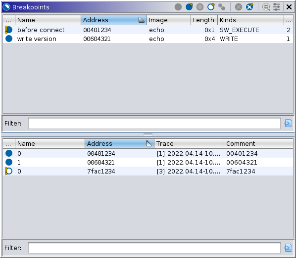

- Enabled
 Disabled
Disabled Inconsistent: Enabled with disabled
locations
Inconsistent: Enabled with disabled
locations Inconsistent: Disabled with enabled
locations
Inconsistent: Disabled with enabled
locations- Enabled but ineffective
 Disabled and ineffective
Disabled and ineffective
|  |
Breakpoints refer to any mechanism which may trap execution based on an address. The breakpoints manager presents all active breakpoints among all open programs and live traces. Note that dead traces are not considered, and only the breakpoints at the present are displayed, even if the user has stepped a trace backward. Breakpoints which map to the same address in the same module, i.e., program image, and otherwise share the same attributes, are grouped into a logical breakpoint. NOTE: The breakpoints window cannot display or manipulate breakpoints from a target until that target is recorded into a trace. See the Static Mappings window for the finer details of mapping traces to imported modules. In this manner, breakpoints stored in Ghidra programs comprise the current breakpoint set, organized by address — except for breakpoints outside a known imported module. The top table of the provider displays logical breakpoints; the bottom table displays breakpoint locations.
Depending on what is supported by the connected debugger, breakpoints can trap a target when an address or range is executed, read, or written; using software or hardware mechanisms. In case of "read" or "write," debuggers may differ in terminology, e.g., GDB might call them "watchpoints," but Ghidra still calls these "breakpoints." Some debuggers allow the user to specify a breakpoint location other than by address, but ultimately each specification is realized by 0 or more addressable locations. To accommodate this, the Objects window will typically display a list of specifications, each listing its locations as children. However, the grouping of breakpoint locations into logical breakpoints by this manager is done without respect to the specifications. Often the specification is at a higher stratum than Ghidra natively understands, e.g., the source filename and line number, and so such specifications are not relevant. Note, however, that the model might not permit locations to be manipulated independently of their specification, which may limit how the manager can operate on each breakpoint location.
Because of the logical grouping of breakpoints, it is possible for a breakpoint to be in a mixed or inconsistent state. This happens quite commonly, e.g., when a breakpoint is placed in a Ghidra program before that program is mapped in any traced target. Once mapped in, the location of that breakpoint in the trace is computed and noted as missing. A logical breakpoint without any location in a trace (i.e., on an actual target) is called "ineffective" and is drawn in grey. An enabled logical breakpoint having a disabled location is called "inconsistent" and its icon will indicate that state. A disabled logical breakpoint having an enabled location is similarly "inconsistent." Toggling ineffective or inconsistent breakpoints enables and/or places all locations, bringing it into a consistent enabled state. Toggling it again disables all locations.
The top table, which lists logical breakpoints, has the following columns:
Disabled Inconsistent: Enabled with disabled
locations Inconsistent: Disabled with enabled
locations Disabled and ineffectiveThe bottom table, which lists trace breakpoint locations, has the following columns:
The primary purpose of this provider is to manipulate existing breakpoints. It provides the following actions to that end. Breakpoints can also be managed via the Breakpoint Marker Actions in the disassembly listings.
This action is available when one or more breakpoints or locations are selected. It enables each selected breakpoint. For any breakpoint that is already enabled, no action is taken.
This action is always available. It enables every breakpoint. For any breakpoint that is already enabled, no action is taken.
Disable
Selected BreakpointsThis action is available when one or more breakpoints or locations are selected. It disables each selected breakpoint. For any breakpoint that is already disabled, no action is taken.
This action is always available. It disables every breakpoint. For any breakpoint that is already disabled, no action is taken.
This action is available whenever there are mapped breakpoints with 0 locations, i.e., it corresponds to a target location where the breakpoint is still missing. It places such breakpoints where possible. This action is also offered as a resolution in the console. It appears in the log any time this action is available.
This action is available when one or more breakpoints or locations are selected. It clears (deletes) each selected breakpoint.
This action is always available. Use with caution! It deletes every breakpoint.
For organizing breakpoints the manager provides the following actions:
 Filter to
Current Trace
Filter to
Current TraceThis toggle is always available. It filters the bottom table to those locations in the current trace only. Additionally, the "Locations" column of the top table will only count those in the current trace.
 Filter to
Breakpoint Selection
Filter to
Breakpoint SelectionThis action is always available. It filters the bottom table to those locations belonging to a selected breakpoint in the top table.